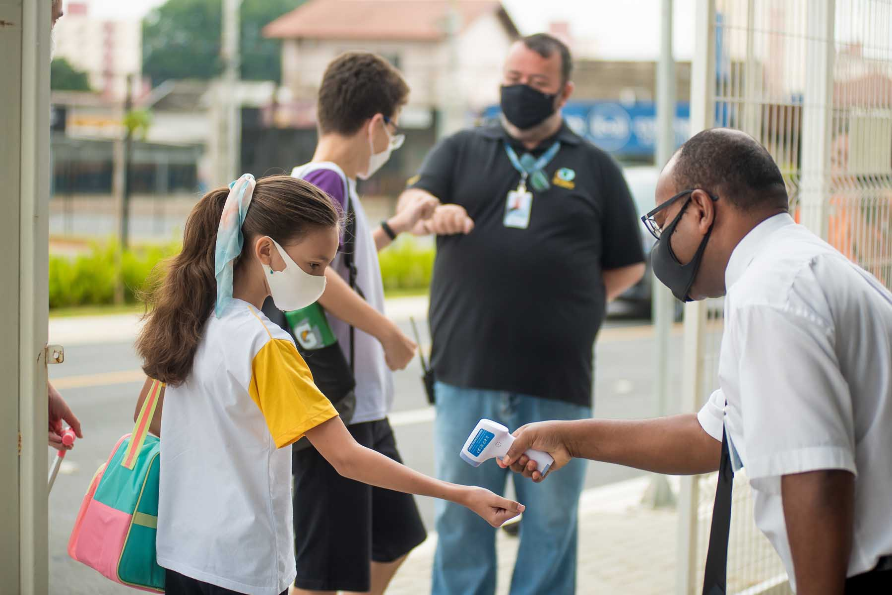

A maioria das escolas não conta com o suporte necessário para o oferecimento do ensino remoto ou a distância. Até então as plataformas digitais eram aproveitadas pela minoria dos estudantes da Educação Básica. Do dia para a noite as escolas precisaram encontrar maneiras de se adaptar a essas “novas tecnologias” – que não são tão novas assim. As crianças e os jovens também não estavam acostumados a rotinas pesadas de estudos em casa. De maneira geral, os estudantes não possuem a maturidade e autonomia exigidas no ensino a distância, em especial na Educação Infantil e no Ensino Fundamental.  As dificuldades existem, mas o importante é que saibamos identificar essas falhas, nos dedicar e demonstrar esforços para corrigi-las. Outro problema que ficou evidente na educação com a pandemia do Coronavírus é a desigualdade social e de acesso a tecnologias, o que causou um abismo entre aqueles que podem dar continuidade ao seu processo de aprendizagem e outros que sequer possuem um dispositivo eletrônico com conexão à internet dentro. O motivo não foi agradável, é verdade, mas o distanciamento social e a suspensão das aulas presenciais impuseram um momento de reflexão para toda a comunidade escolar. Educadores, pesquisadores e gestores da área da Educação estão buscando meios de renovar o ensino. Por sua vez, as escolas precisam ensinar os estudantes a explorarem sua criatividade para solucionar problemas complexos, e não apenas decorarem o conteúdo para obterem sucesso em provas – vestibulares que são a base das escolas inovadoras.